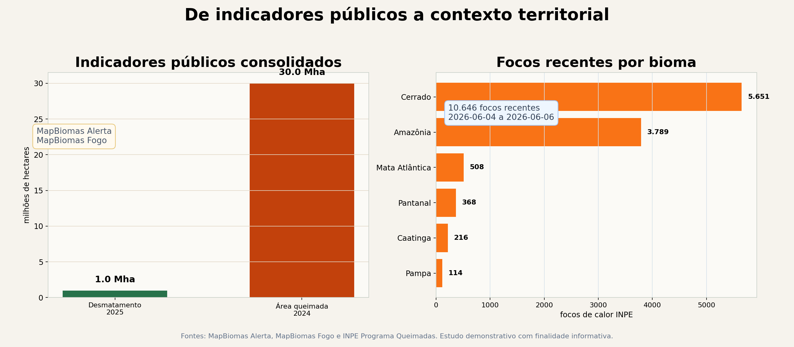

O que este estudo acrescenta
Os dados utilizados já estão disponíveis em fontes públicas oficiais. A contribuição deste trabalho está na organização territorial das informações e na leitura conjunta dos sinais observados.
As fontes originais apresentam indicadores específicos. Este estudo reúne esses sinais para mostrar onde eles se concentram e como podem ser lidos em conjunto.
O que vem das fontes públicas
| MapBiomas Alerta | Quanto foi desmatado. |
|---|
| MapBiomas Fogo | Quanto foi queimado. |
|---|
| INPE Programa Queimadas | Onde ocorreram focos de calor recentes. |
|---|
O que a organização territorial acrescenta
| Concentração | Onde os sinais se concentram territorialmente. |
|---|
| Volume relativo | Quais territórios acumulam maior volume relativo de ocorrências. |
|---|
| Avaliação adicional | Onde diferentes indicadores podem justificar revisão territorial. |
|---|
| Leitura integrada | Como múltiplas bases públicas podem ser organizadas em uma leitura territorial integrada. |
|---|
Em resumo
As fontes públicas mostram os indicadores. A CaptaGeo organiza esses indicadores em contexto territorial, transformando sinais dispersos em uma leitura comparável para apoiar análise complementar.
Evidência dos dados do estudo
O estudo compara indicadores públicos de desmatamento, área queimada e focos recentes para mostrar como trajetórias distintas podem ser lidas em conjunto por território.
Dados MapBiomas
-20,6%
queda do desmatamento no Brasil em 2025, segundo MapBiomas Alerta.
- 984.794 ha desmatados no indicador consolidado.
- Menor área desmatada em seis anos.
- Brasil abaixo de 1 milhão de hectares desmatados.
Dados comparados
79%
alta da área queimada no Brasil em 2024 frente a 2023, segundo MapBiomas Fogo.
- Mais de 30.000.000 ha queimados em 2024.
- 2024 ficou 62% acima da média histórica.
- O pulso INPE recente reuniu 10.646 focos analisados.
| Unidade | Top 5 | Top 10 | Concentração | Leitura |
|---|
| Bioma | 98,9% | 100,0% | 4124,3 | alta concentração: observar os territórios líderes |
| Estado | 80,0% | 93,6% | 2921,3 | alta concentração: observar os territórios líderes |
| Município | 21,8% | 35,1% | 169,7 | sinal disperso: monitoramento territorial amplo |
Introdução
Imagens isoladas frequentemente permitem interpretações distintas, especialmente quando um elemento identificado é observado sem contexto temporal, territorial ou de múltiplas fontes. A análise geoespacial ganha robustez quando diferentes datas, fontes observadas e escalas são avaliadas em conjunto.
Este estudo coloca o objeto observado dentro de uma leitura territorial integrada e mostra como diferentes fontes, períodos e escalas de observação contribuem para contextualizar sinais identificados em imagens geoespaciais.
Objetivo da Análise
O objetivo deste estudo é demonstrar como séries temporais de observação podem ampliar a interpretação de elementos identificados em imagens geoespaciais.
Aplicações Potenciais
- Monitoramento territorialAcompanhamento integrado de indicadores públicos.
- Planejamento de campoPriorização de áreas para revisão territorial.
- Gestão ambientalOrganização de evidências para análise institucional.
- Revisão contextual de vistoriasApoio a filas de revisão e alocação de equipes.
- Crédito e seguroLeitura territorial para exposição e elegibilidade.
- Compliance e rastreabilidadeSuporte a governança e rastreio territorial.
- Organização de evidências geoespaciaisEstruturação de bases públicas em uma visão única.
Leitura Integrada dos Indicadores
Indicador observado
-20,6%
Queda do desmatamento no Brasil em 2025, segundo MapBiomas Alerta.
- Menor área desmatada em seis anos.
- Brasil abaixo de 1 milhão de hectares desmatados.
- Leitura isolada: melhora relevante no indicador nacional de desmatamento.
Interpretação baseada em um único indicador: a observação ganha contexto quando analisada junto a outras camadas territoriais.
Indicadores territoriais
>30 Mha
Área queimada no Brasil em 2024, segundo MapBiomas Fogo.
- Área queimada cresceu 79% em relação a 2023.
- 2024 ficou 62% acima da média histórica.
- Leitura integrada: sinais observados e concentração territorial ampliam o contexto de análise.
Leitura institucional: diferentes indicadores podem apresentar trajetórias distintas e devem ser avaliados em conjunto.
Painel quantitativo
O gráfico combina indicadores consolidados do MapBiomas com dados públicos do INPE utilizados na geração do estudo. A leitura aproxima desmatamento, fogo e focos recentes em uma mesma visão territorial.

Indicadores rastreáveis
| Indicador | Valor | Fonte |
|---|
| Desmatamento Brasil 2025 | 984.794 ha | MapBiomas Alerta / RAD 2025 |
| Queda vs 2024 | 20,6% | MapBiomas Alerta / RAD 2025 |
| Área queimada Brasil 2024 | >30.000.000 ha | MapBiomas Fogo / RAF 2024 |
| Alta da área queimada vs 2023 | 79% | MapBiomas Fogo / RAF 2024 |
| Pulso INPE recente | 10.646 focos | INPE Programa Queimadas / BDQueimadas |
Atlas de Observações
O mapa apresenta duas leituras. A camada vermelha mostra focos de calor registrados por satélite. A Classe de Leitura Territorial organiza a mesma base para apoiar interpretação espacial.
Indicador observado
Foco de calor detectado por satélite. É um indicador territorial que requer contexto para leitura de área, causa ou efeito.
Classe de Leitura Territorial
Organiza os sinais observados em classes de leitura territorial para apoiar leitura comparável e análise complementar.
Como ler este mapa
Ligue e desligue as camadas no controle superior direito. Os pontos vermelhos representam focos de calor observados; os círculos coloridos menores representam a leitura territorial observada.
Como os indicadores foram organizados
Os indicadores foram agrupados em uma estrutura única de leitura territorial para facilitar comparação, contextualização e avaliação adicional.
UnidadeBioma, estado, município ou imóvel quando houver geometria do cliente.
SinalFoco INPE recente e características do sinal observado no período analisado.
ContextoIndicadores MapBiomas de desmatamento e cicatriz de fogo histórica.
InterpretaçãoApoiar leitura institucional, comparação temporal e solicitação de dados adicionais.
Matriz de Interpretação Territorial
A matriz organiza sinais observados em uma leitura territorial comparável. O objetivo é apoiar a identificação de territórios que concentram maior relevância no período analisado, sem extrapolar para causa, dano, conformidade ou responsabilidade.
| Bioma | Focos | Participação | Sinal de atenção | Leitura |
|---|
| Cerrado | 5.651 | 53.1% | maior volume no recorte | concentração territorial alta |
| Amazônia | 3.789 | 35.6% | volume relevante no recorte | concentração territorial alta |
| Mata Atlântica | 508 | 4.8% | observação complementar | ponto de atenção territorial |
| Pantanal | 368 | 3.5% | observação complementar | ponto de atenção territorial |
| Caatinga | 216 | 2.0% | observação complementar | ponto de atenção territorial |
| Pampa | 114 | 1.1% | observação complementar | ponto de atenção territorial |
| Estado | Focos | Participação | Sinal de atenção | Leitura |
|---|
| MATO GROSSO | 5.369 | 50.4% | maior volume no recorte | concentração territorial alta |
| TOCANTINS | 1.761 | 16.5% | volume relevante no recorte | sinal intermediário observado |
| PARÁ | 358 | 3.4% | observação complementar | sinal intermediário observado |
| MARANHÃO | 600 | 5.6% | observação complementar | sinal intermediário observado |
| MINAS GERAIS | 387 | 3.6% | observação complementar | ponto de atenção territorial |
| BAHIA | 398 | 3.7% | observação complementar | ponto de atenção territorial |
| PIAUÍ | 298 | 2.8% | observação complementar | ponto de atenção territorial |
| MATO GROSSO DO SUL | 293 | 2.8% | observação complementar | ponto de atenção territorial |
Concentração Territorial
Concentração responde uma pergunta diferente do volume: quando poucos territórios concentram grande parte do sinal observado, a avaliação territorial e o planejamento de campo podem ser organizados com mais clareza.
| Unidade | Grupos | Top 5 | Top 10 | Concentração | Leitura |
|---|
| bioma | 6 | 98.9% | 100.0% | 4124.3 | alta concentração: observar os territórios líderes |
| estado | 25 | 80.0% | 93.6% | 2921.3 | alta concentração: observar os territórios líderes |
| município | 769 | 21.8% | 35.1% | 169.7 | sinal disperso: monitoramento territorial amplo |
Encaminhamento Recomendado
A tabela abaixo apresenta uma leitura territorial por município, sem extrapolar para causa, legalidade ou dano.
| Município | Focos | Destaque territorial | Encaminhamento sugerido |
|---|
| SÃO FÉLIX DO ARAGUAIA | 564 | sinal territorial concentrado | observar contexto territorial em análise complementar |
| SAPEZAL | 499 | sinal territorial concentrado | observar contexto territorial em análise complementar |
| NOVA MARINGÁ | 494 | sinal territorial concentrado | observar contexto territorial em análise complementar |
| BRASNORTE | 334 | ponto de atenção territorial | observar contexto territorial em análise complementar |
| TANGARÁ DA SERRA | 427 | ponto de atenção territorial | observar contexto territorial em análise complementar |
| NOVA UBIRATÃ | 224 | ponto de atenção territorial | observar contexto territorial em análise complementar |
| JUARA | 241 | ponto de atenção territorial | observar contexto territorial em análise complementar |
| PONTE ALTA DO TOCANTINS | 342 | ponto de atenção territorial | observar contexto territorial em análise complementar |
| SANTANA DO ARAGUAIA | 145 | ponto de atenção territorial | observar contexto territorial em análise complementar |
| SINOP | 130 | ponto de atenção territorial | observar contexto territorial em análise complementar |
| FELIZ NATAL | 134 | ponto de atenção territorial | observar contexto territorial em análise complementar |
| NOVA MARILÂNDIA | 80 | ponto de atenção territorial | observar contexto territorial em análise complementar |
Limites de uso
Foco ativo é sinal de calor detectado por satélite. Área queimada, dano e conformidade territorial exigem evidências complementares, como imagem antes/depois, território, documentação aplicável e verificação contextual.
O que este exemplo demonstra
- Importância da análise temporalObservações em diferentes datas ajudam a distinguir sinais persistentes de variações temporárias.
- Importância do contexto territorialLimites administrativos, biomas e concentração espacial ampliam a leitura do ponto de interesse.
- Comparação entre diferentes períodosSéries temporais reduzem a dependência de uma única imagem ou de um único indicador.
- Interpretação baseada em múltiplas fontesMapBiomas, INPE e camadas territoriais públicas contribuem para uma leitura mais consistente.
Biomas no pulso recente
- Cerrado5.651 focos
- Amazônia3.789 focos
- Mata Atlântica508 focos
- Pantanal368 focos
- Caatinga216 focos
- Pampa114 focos
Estados no pulso recente
- MATO GROSSO5.369 focos
- TOCANTINS1.761 focos
- MARANHÃO600 focos
- BAHIA398 focos
- MINAS GERAIS387 focos
- PARÁ358 focos
- GOIÁS298 focos
- PIAUÍ298 focos
Contribuição da organização territorial
O valor deste estudo está na organização conjunta de indicadores que normalmente são consultados separadamente.
A integração entre desmatamento, área queimada, focos recentes e distribuição territorial permite ampliar o contexto de interpretação e reduzir a dependência de observações isoladas.
| Camada | Função no case |
|---|
| MapBiomas Alerta | Apresenta o indicador consolidado de desmatamento. |
| MapBiomas Fogo | Apresenta o indicador consolidado de área queimada e série histórica de fogo. |
| INPE Programa Queimadas | Adiciona pulso recente e série anual de focos de calor. |
| Leitura CaptaGeo | Organiza indicadores dispersos em uma leitura territorial integrada para apoiar interpretação. |
Pergunta adicional que este estudo permite observar
Os indicadores públicos respondem perguntas específicas. A leitura integrada apresentada neste estudo busca responder uma pergunta adicional:
Quais territórios concentram maior volume relativo de sinais observados e podem justificar avaliação adicional?
Conclusão
Este estudo demonstra como indicadores públicos de desmatamento, área queimada e focos recentes podem ser organizados em uma leitura territorial integrada. A contribuição da CaptaGeo está em transformar sinais dispersos em uma visão comparável por território, apoiando a identificação de áreas que podem justificar análise complementar.
Fontes Públicas Utilizadas
As fontes preservadas neste estudo são MapBiomas Alerta, MapBiomas Fogo e INPE Programa Queimadas, com indicadores compatíveis com as publicações oficiais utilizadas na geração do painel.
Aplicar esta leitura em uma carteira agrícola
A mesma estrutura pode apoiar revisão territorial por área, município, talhão ou carteira, conectando fonte pública, período e contexto técnico em uma evidência rastreável.